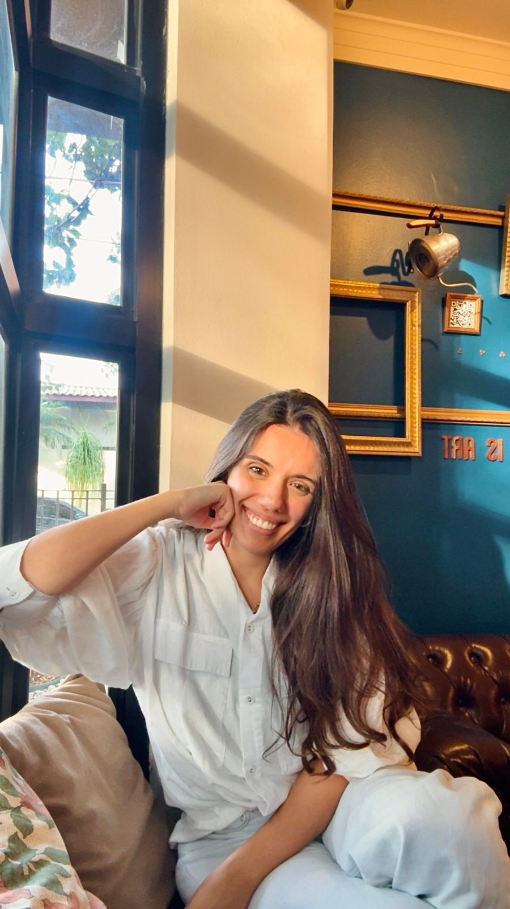

Terapia Online para Adultos e Adolescentes. De forma leve, consciente e sem culpa.
Sente que perdeu o controle com a comida e vive em ciclos de restrição e compulsão.
Tem dificuldade em aceitar o próprio corpo e sente culpa ou vergonha ao se alimentar.
Percebe que sua relação com a comida está ligada às suas emoções ou traumas passados.
Na psicoterapia, você poderá:
Meu trabalho é baseado na Terapia Cognitivo-Comportamental, uma abordagem eficaz no tratamento dos transtornos alimentares.
Sou psicóloga com atuação voltada para transtornos alimentares e questões emocionais relacionadas à alimentação, corpo e autoestima.
Possuo experiência no atendimento a pessoas com transtornos alimentares, o que contribui para uma compreensão aprofundada das demandas envolvidas e para a condução de um acompanhamento ético, sensível e individualizado.
Acredito em um cuidado que respeita a história de cada pessoa, sem julgamentos e com foco na construção de uma relação mais leve e consciente consigo mesma.
